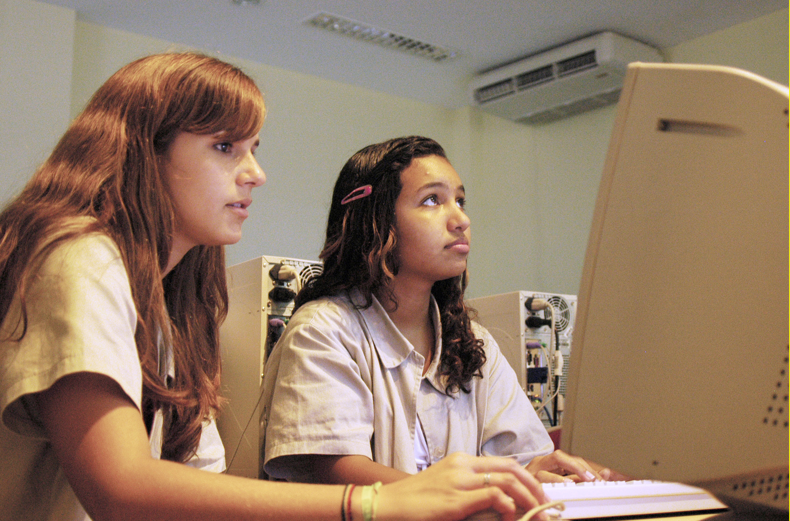

Possibilita destacar a importância das especificidades culturais e sociais;
Módulo 4 | Aula 3 A Literacia Digital em Saúde como Competência para promover Saúde na APS
Tópico 3
Estratégias de ação para aumentar os níveis de LS por meio da Literacia Digital em Saúde

No documento “Recomendações para a Operacionalização da Política Nacional de Promoção da Saúde na Atenção Primária à Saúde” do Ministério da Saúde (MS), elaborado pelo Departamento de Promoção da Saúde (DEPROS) da Secretaria de Atenção Primária à Saúde (SAPS), tem-se algumas recomendações dentro de temáticas específicas que podem contribuir para a concretização e qualificação da Promoção da Saúde no território, com vistas a concretizar e mensurar a Política Nacional de Promoção da Saúde (PNPS), que se encontra inserida na prática e no cotidiano dos profissionais da saúde e da população atendida pelo SUS.
A Literacia Digital em Saúde pode auxiliar na tomada das principais decisões que afetam a política de saúde, construindo um ambiente permanente de aprendizagem coletiva:
O aumento do nível de LS por meio da Literacia Digital em Saúde como competência se dá no estabelecimento de espaços compartilhados de decisões entre instituições e diferentes setores do governo, articulando saberes entre sujeitos, respeitando os modos de viver de cada pessoa a fim de objetivos comuns e influenciando positivamente os profissionais e os usuários do sistema de saúde em comportamentos para a busca de informações sobre saúde e a qualidade de vida (BRASIL, 2020).
Com isso, ela auxilia no planejamento, monitoramento e na avaliação dos processos de trabalho das equipes e unidades de saúde, considerando as suas especificidades do cuidado organizado em rede, preconizado na APS com ações voltadas à promoção da saúde, a educação permanente e a educação popular em saúde.
E, ainda, auxilia o cotidiano profissional com vistas à busca por informações confiáveis em saúde e considera os conhecimentos e as experiências que cada pessoa já possui, o que contribui na construção de conhecimentos em saúde ampliando a autonomia das pessoas no seu cuidado e no debate com os profissionais de saúde e os gestores do setor, com vistas a alcançar a atenção em saúde de acordo com as necessidades de cada um potencializando a participação social (BRASIL, 2020).
O acesso a informações e atualizações sobre os assuntos referentes à saúde é de fundamental importância, sobretudo com a finalidade de desenvolver habilidades e competências no âmbito da Literacia Digital, que, como dito no início deste capítulo, tem o potencial de possibilitar que a população – e aqui entram profissionais da saúde, gestores, usuários e todos os atores sociais existentes - aprenda e apreenda os novos conhecimentos adquiridos e assim possa promover transformações em seu cotidiano.
Para refletir...
Os profissionais da APS podem elaborar um projeto para pessoas com Doenças Crônicas Não Transmissíveis (DCNT) com perspectivas para a Educação em Saúde, utilizando as tecnologias presentes na vida dos usuários que atendem em sua Unidade de Referência, por exemplo.Que tal a criação de um programa na rádio local (a mais ouvida) ou um programa na TV de uma emissora local ou regional (mais vista) para tratar de temáticas relacionadas à quantidade de informações sobre DCNT que estão disponíveis em sites, blogs e Instagram? O que podemos considerar? Qual fonte de informações é mais confiável?
Refletindo sobre esta proposta, as ações que podem ser elaboradas devem ser sempre democráticas e participativas junto com o trabalho em equipe considerando as singularidades, complexidades, integralidades e a inserção sociocultural dos seus usuários, e como orientação para as suas ações os princípios da universalidade, da acessibilidade, da continuidade, da integralidade, da responsabilização, da humanização, do vínculo, da equidade e da participação social, tão amplamente defendidos pelo SUS.
Esse movimento pode influenciar positivamente os comportamentos na busca de informações sobre saúde e a qualidade de vida dos usuários do sistema de saúde, para que possam compreender qual informação é de fato relevante para a sua saúde.
A partir desta breve contextualização sobre as estratégias de ações para aumentar os níveis de LS por meio da Literacia Digital em Saúde, fica claro que a Literacia Digital em Saúde pode ser uma competência que amplia os níveis de LS, pois contribui na busca crítica e reflexiva de informações sobre saúde. Nessas ações é importante que se fortaleça a Educação em Saúde e a Comunicação em Saúde, considerando os modos de viver e as particularidades de cada usuário.

Dentre tantos exemplos, a Literacia Digital em Saúde pode também estar presente no processo de aprendizagem no trabalho, onde o aprender e o ensinar se incorporam no cotidiano dos profissionais de saúde, dos usuários do sistema de saúde e das organizações que visam à transformação das práticas profissionais e à problematização no âmbito do trabalho. Ela auxilia no cotidiano com vistas à busca por informações em saúde e considera os conhecimentos e as experiências que cada pessoa já possui, o que contribui na construção de conhecimentos em saúde, sendo um conjunto de práticas do setor que propiciam a ampliação da autonomia das pessoas no seu cuidado e no debate com os profissionais de saúde e os gestores do setor, com vistas a alcançar a atenção em saúde de acordo com as necessidades de cada um potencializando a participação social.
Todos os exemplos acima onde a Literacia Digital em Saúde pode estar inserida podem direcionar a atuação dos profissionais da APS e são relevantes por ter foco na abordagem do cuidado individual, familiar e coletivo a partir de um rol de atividades e ações que podem e devem ser inseridas na agenda dos profissionais de saúde, na medida de suas capacidades e condições ofertadas pela organização do processo de trabalho das equipes multiprofissionais, de seus componentes e ainda da maturidade das relações intersetoriais já implementadas nos territórios (FARINELLI et al., 2017).
Portanto, a partir de ações propositivas em relação à organização do trabalho das equipes, se visualiza a possibilidade de ampliação na capacidade de atuação e resolutividade das intervenções dos profissionais de saúde inseridos na APS, e consequentemente o aumento do nível de LS desses profissionais que estarão se apropriando das habilidades proporcionadas pela Literacia Digital em Saúde (BRASIL, 2020).
Material complementar
Acesse o material abaixo para saber mais sobre a Literacia Digital:
- Literacia para a saúde: habilidades para lidar com as informações sobre saúde podem ajudar a construir novos caminhos na saúde pública | Sousa | Revista Eletrônica de Comunicação, Informação e Inovação em Saúde (fiocruz.br)
- Centro de Estudos do ICICT explica o que é o conceito de Literacia Digital em Saúde